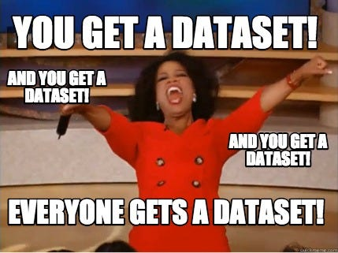

Dataset
Welcome to the our dataset page! Our dataset is in xml format.
Welcome to the our dataset page! Our dataset is in xml format.
This page is part of a project from the Datalogical Thinking course at the Borås University (Sweden). For more information, please refer to the template's GitHub repository..